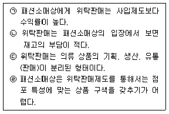
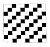
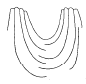
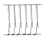
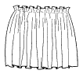
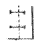
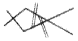
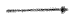

패션머천다이징산업기사 (2004-03-07 기출문제)
1과목: 패션마케팅
1. 최적의 시장세분화가 이루어지기 위한 바람직한 조건이 아닌 것은?
- 각 세분시장의 규모와 구매력의 크기는 측정할 수 있어야 한다.
- 각 세분시장에 마케팅 프로그램이 효과적으로 접근할 수 있어야 한다.
- 각 세분시장내 고객들은 서로 다른 반응을 보이도록 해야 한다.
- 각 세분시장이 충분한 이익을 가져올 수 있을 정도로 수익성과 가치가 있어야 한다.
(정답률: 알수없음)

2. 우리나라 의류업계의 유통관리 형태 중 위탁 판매제도의 특성이 보기에서 맞게 묶인 것은?

- ㉠, ㉡
- ㉠, ㉢
- ㉡, ㉣
- ㉠, ㉣
(정답률: 알수없음)
3. 사회적 마케팅(Social Marketing)의 특징은?
- 기업의 목표와 일치
- 사회의 목표와의 일치
- 고객 이익과의 일치
- 기업의 이익과 일치
(정답률: 알수없음)
4. 패션산업에 필요한 정보로 가장 거리가 먼 것은?
- 컴퓨터정보
- 시장정보
- 소비자정보
- 패션정보
(정답률: 알수없음)
5. 리테일머천다이징의 요소가 아닌 것은?
- 점포
- 고객
- 생산
- 상품
(정답률: 알수없음)
6. 인구통계적 특성으로 시장을 세분화한 예는?
- 여성복 시장
- 속옷 시장
- 캐쥬얼웨어 시장
- 스포츠웨어 시장
(정답률: 알수없음)
7. 패션바이어의 직무에 해당되지 않는 것은?
- 구매처 선정
- 판매
- 판매가 결정
- 발주량 결정
(정답률: 알수없음)
8. B.I(Brand Identity)작업에 대한 설명으로 가장 적당한 것은?
- 브랜드 이미지를 설정하는 작업이다.
- 브랜드 설정을 위해 상표, 로고의 심볼마크, 심볼컬러 등을 설정하는 작업이다.
- 브랜드의 기본방향을 설정하기 위해 구체적인 컨셉을 설정하는 작업이다.
- 브랜드 컨셉을 표현할 수 있는 문구를 설정하는 작업이다.
(정답률: 알수없음)
9. 윙게이트(J.W. wingate)의 상품구성이론에 따른 상품구성 설명이 바르게 짝지워진 것은?
- 기본상품: 유행성이 강하지 않은 항상 상품
- 기본상품 : 판매촉진을 위한 저가격 상품
- 기본상품: 재고처리상품
- 기본상품 : 점격 향상을 위한 상품
(정답률: 알수없음)
10. 다음 중 가격 할인율을 바르게 산출한 것은?
- 가격 할인율 = 가격 할인액 涇 순판매고
- 가격 할인율 = 순판매고 涇 가격 할인액
- 가격 할인율 = 가격 할인액 涇 예정 매상고
- 가격 할인율 = 예정 매상고 涇 가격 할인액
(정답률: 알수없음)
11. 다음 중 판매촉진활동이 아닌 것은?
- 광고
- 인적판매
- 유행경향 분석
- P.R.(Public Relations)
(정답률: 알수없음)
12. 다음 중 소비자 정보가 아닌 것은?
- 라이프 스타일 조사
- 착용경향 조사
- 구매 동기 및 구매 패턴 조사
- 경쟁사의 상품조사
(정답률: 알수없음)
13. 마케팅 믹스(4P’ s)는 마케팅 시스템의 핵심을 구성하는 네 개의 투입변수로 이루어진다. 마케팅 관리자는 기업의 목적 달성을 위해 이들을 적절히 결합하여 통제 불가능한 마케팅 환경의 변화에 효과적으로 대응한다. 다음 중 4P’ s Mix 전략에 속하지 않는 것은?
- product
- price
- place
- pride
(정답률: 알수없음)
14. 패션마케팅 관리의 접근방식 중 창의적인 패션디자인과 기업이윤 모두를 중요하게 생각하고 이들 간에 상호보완적인 관계가 이루어지도록 접근하는 마케팅 관리방식은?
- 디자인 지향적
- 판매 지향적
- 패션마케팅 지향적
- 이윤 지향적
(정답률: 알수없음)
15. 기업이 효과적인 머천다이징을 수행하기 위해서는 시장전략이 중요하다. 시장전략의 이행을 위한 마케팅 절차는 시장세분화 단계, 시장표적화 단계, 시장포지셔닝 단계로 나뉘어진다. 다음 중 시장세분화에 대한 설명이 아닌 것은?
- 시장세분화란 서로 다른 구매의욕과 필요조건을 가진 구매자 군을 식별하는 과정을 의미한다.
- 시장세분화란 소비자를 포괄적인 개념으로 파악하는 것이 아니라 시장의 이질성에 따라 몇 개의 특정한 집단으로 분해하는 것이다.
- 시장세분화는 마케팅 목적을 달성하기 위하여 마케팅 활동에 중요한 의미를 가지고 있는 특성을 가진 소비자를 몇 개의 소집단으로 분류하여 동질의 계층을 구하는 것이다.
- 시장세분화시 시장세분화의 기준은 인구통계학적 구분에 의해서만 분류된다.
(정답률: 알수없음)
16. 유통업체나 직영점포를 보유하고 있는 의류업체들은 매장에서 취급될 상품들을 중점상품, 보완상품, 전략상품으로 나누어 구성한다. 이 중 패션업체가 높은 매출액과 이익 확보를 위하여 주력하는 제품으로 점포에서 상품 회전이 높은 제품은?
- 보완 제품
- 중점 제품
- 전략 제품
- 모든 제품
(정답률: 알수없음)
17. 통신판매는 세계적으로 가장 빠르게 성장하는 소매업태 중 하나이다. 통신판매가 증가하는 이유가 아닌 것은?
- 마케팅 환경의 지역차를 극복할 수 있기 때문이다.
- 가격에서 유리할 수 있기 때문이다.
- 소비자의 변화추세가 통신판매에 적합하다.
- 패션제품에 있어서는 맞음새(fitting)에 있어서 고객의 만족도를 높일 수 있다.
(정답률: 알수없음)
18. 패션마케팅의 수행에 있어 새로운 패션상품으로의 대체시장을 만들기 위한 하나의 방법으로 유행이 지난 의상을 착용함으로써 시대적으로 뒤떨어진 느낌을 가지도록 만드는 생산자적 입장의 마케팅 방법은?
- 퍼블리시티(Publicity)
- 계획적 진부화
- 스페셜이벤트
- 상품기획
(정답률: 알수없음)
19. 다음 중 제조업체의 머천다이징과 유통업체의 리테일 머천다이징 활동들 중에 공통으로 적용되지 않는 것은 무엇인가?
- 패션 트렌드와 소비자 수요의 예측
- 원부자재 구매 계획
- 효과적인 세일즈 프로모션
- 상품 정책의 수립
(정답률: 알수없음)
20. 소비자가 제품결정을 위한 대안의 평가시 각 상표별로 한속성에서 느끼는 단점을 다른 속성의 강점으로 상쇄하여 전반적으로 평가하는 방식을 무엇이라 하는가?
- 결합식 방법
- 사전편집식 방법
- 보완적 방법
- 연속제거식 방법
(정답률: 알수없음)
2과목: 패션소재기획
21. 자연환경에 대한 경각심으로 시작되어 패션소재에 천연소재 및 내추럴등의 소재에 관심을 나타낸 현대 패션의 대표적인 트렌드(Trend)는?
- 노스탤지어(Nostalgia)
- 에콜로지(Ecology)
- 에스닉(Ethnic)
- 글로벌(Global)
(정답률: 알수없음)
22. 의류용 피혁류에 주로 나타나는 소비자 불만족 사례와 가장 관계가 적은 것은?
- 색상 변화
- 강도 저하
- 촉감 변화
- 줄무늬 발생
(정답률: 알수없음)
23. 다음 중 견섬유의 성질이 아닌 것은?
- 염색성이 좋다.
- 내일광성이 우수하다.
- 알칼리에 쉽게 손상된다.
- 드레이프성이 우수하다.
(정답률: 알수없음)
24. 실의 굵기, 색상, 섬유의 종류, 꼬임수등이 각기 다른 실을 여러 가지 방법으로 합하여 패션성을 나타내는 실의 총칭은?
- 장식사
- 정련사
- 중공사
- 실켓사
(정답률: 알수없음)
25. 다음 조직도에 대한 설명으로 맞지 않는 것은?

- 표면이 평활하며 광택이 우수하다.
- 평직보다 내구성, 드레이프성, 유연성이 좋다.
- 데님, 서어지, 프란넬 등이 대표적인 직물이다.
- 사선방향으로 능선 또는 사문선이 나타나므로 사문직이라고도 한다.
(정답률: 알수없음)
26. 다음 섬유 중에서 습윤 시 강도가 가장 강해지는 것은?
- 합성섬유
- 모섬유
- 면섬유
- 견섬유
(정답률: 알수없음)
27. 다음 중 소재의 분위기와 촉감에 따라 감성을 분류할 경우 연결이 잘못 된 것은?
- 라이트(light) - 단단하고 뻣뻣하다.
- 클린(clean) - 매끈매끈하고 섬세하다.
- 웨트(wet) - 광택이 있으며 촉촉하다.
- 러프(rough) - 까슬까슬하고 거칠다.
(정답률: 알수없음)
28. 패션상품 제조자가 지켜야 할 의무적인 품질표시에 속하지 않는 것은?
- 세탁법
- 물의 온도
- 다림질 온도
- 대전성
(정답률: 알수없음)
29. 의류용 소재 사용시 고려되는 실용적 선택기준이 아닌 것은?
- 외관유지
- 내구성
- 광고성
- 쾌적성
(정답률: 알수없음)
30. 올바른 소재기획 (Fabrication)을 위한 검토항목 중 필수적으로 고려해야 될 사항이 아닌 것은?
- 소재와 스타일의 관계
- 소재의 생산, 납기관계
- 소재의 품질관리 관계
- 소재의 봉합검사 관계
(정답률: 알수없음)
31. 직물의 경사와 위사의 일반적인 판별법으로 틀린 것은?
- 직물의 밀도가 많은 방향이 경사이다.
- 직물에 변사가 있을 때 변사방향이 경사이다.
- 교직물인 경우 강력이 큰 방향이 경사이다.
- 단사와 합연사의 교직은 단사방향이 경사이다.
(정답률: 알수없음)
32. 다음 방모 섬유의 기모(Raising) 가공 소재 중 부드러운 질감을 잘 표현하는데 일차적인 목적을 둔 가공 소재는?
- 멜톤(Melton) 가공소재
- 모스(Moss) 가공소재
- 벨루어(Velour) 가공소재
- 비버(Beaver) 가공소재
(정답률: 알수없음)
33. 패션 회사에서의 소재 거래선의 선정 조건에 해당되지 않는 것은?
- 소재 상품에 대한 기술력과 개발력 여부
- 소재 상품에 대한 안정적인 공급능력 여부
- 소재 상품에 대한 풍부한 홍보력 여부
- 소재 상품에 대한 정확한 컨셉의 여부
(정답률: 알수없음)
34. 강직하고 열전도성이 좋고 촉감이 차서 여름옷감으로 선호되는 식물성 섬유는?
- 견
- 양모
- 레이온
- 저마
(정답률: 알수없음)
35. 다음 중 의류업체의 소재기획 시 순서가 옳은 것은?
- 정보수집 → 이미지맵 및 칼라맵 → 소재맵 → 스타일 개발 및 소재선정 → 발주 → 의류생산 → 출하
- 정보수집 → 소재맵 → 이미지맵 및 칼라맵 → 스타일 개발 및 소재선정 → 발주 → 의류생산 → 출하
- 정보수집 → 이미지맵 및 칼라맵 → 스타일 개발 및 소재선정 → 소재맵 → 발주 → 의류생산 → 출하
- 이미지맵 및 칼라맵 → 정보수집 → 소재맵 → 스타일 개발 및 소재선정 → 발주 → 의류생산 → 출하
(정답률: 알수없음)
36. 패션 소재기획에서 정보 수집의 중요성에 대한 설명이 아닌 것은?
- 소비자가 요구하는 패션성에 적합한 제품을 만들기 위해서이다.
- 소재 머천다이저의 주관적 판단을 적절히 반영하기 위해서이다.
- 브랜드 성격과 판매시기에 가장 적합한 소재를 선별하기 위해서이다.
- 소재 선정에 최대한 객관성을 부여하기 위해서이다.
(정답률: 알수없음)
37. 시크(chic) 이미지를 나타내는 소재로 적당한 것은?
- 실크, 벨벳, 모피 등의 고가의 고전적인 소재로 빨간색 등과 같이 화려한 색을 사용한다.
- 소박한 느낌의 면 소재나 실키한 느낌의 폴리에스테르 소재로 감미로운 색상 계열을 사용한다.
- 단순하면서도 부드러운 촉감을 가진 소재로 색상은 무채색 계열과 차분한 색상을 사용한다.
- 표면이 매끄럽고 광택이 있는 소재로 여성스러운 무늬에 파스텔 색조나 따뜻한 느낌의 색상을 사용한다.
(정답률: 알수없음)
38. 합성섬유 중 표준수분율이 가장 높은 섬유는?
- 나일론
- 아세테이트
- 아크릴
- 폴리에스테르
(정답률: 알수없음)
39. 다음 중 패션 트렌드와 감성용어가 알맞게 짝 지어지지 않은 것은?
- 엘레강스-고상한, 우아한
- 컨트리- 자연의 아름다움, 서민적
- 엑조틱- 도회적인, 지성미
- 로맨틱- 화려한, 장식적인
(정답률: 알수없음)
40. 모섬유의 축융성의 원인이 되는 것은?
- 스케일(scale)
- 내섬유(cortex)
- 권축(crimp)
- 모수(medulla)
(정답률: 알수없음)
3과목: 유통관리 및 광고
41. 최근 온라인 판매나 TV 홈쇼핑 등이 급부상하며 유통의 핵으로 떠오르고 있다. 이처럼 제조업자가 직접 소비자에게 판매하는 유통경로 구조를 무엇이라고 하는가?
- 간접 마케팅 경로
- 전통적 마케팅 경로
- 직접 마케팅 경로
- 중간 도매상 경로
(정답률: 알수없음)
42. 디스플레이에 사용되는 수단에 대한 설명 중 옳은 것은?
- 상품 - 디스플레이의 가장 중요한 요소로 고객이 구매에 하고자 하는 디자인, 칼라, 소재, 가격, 스타일을 고려하여 선정된 것이어야 한다.
- 보조도구 - 마네킹이나 바디(body)와 같은 기능적인 소도구만을 포함한다.
- 색상 - 매장내의 색상은 고객의 눈에 가장 먼저 들어오는 것으로 상품기획 시 고려된 상품색상의 조화는 무시하고 계절이나 패션 트렌드를 반영한 배색효과를 우선 중시해야 한다.
- 표시판과 쇼카드 - 정보를 주는 기능이 강하여 매장 환경이 무질서해지므로 매장에서의 사용을 자제해야 한다.
(정답률: 알수없음)
43. 상품속성에 의한 관리제도로 POS 시스템에 의해 통제되어 상품의 수량을 기록하는 시스템으로, 기록을 통하여 바이어가 상품의 흐름을 추적할 수 있는 것은?
- 달러 콘트롤(Dollar control)
- 재고 콘트롤(Inventory control)
- 유니트 콘트롤(Unit control)
- 재정 콘트롤(Financial control)
(정답률: 알수없음)
44. 상품구성 계획 시 가장 거리가 먼 것은?
- 상품의 폭과 깊이의 결정
- 판매시기 결정
- 가격 정책
- 광고 정책
(정답률: 알수없음)
45. 상품구색을 조정하기 위한 올바른 방법이 아닌 것은?
- 중심복종을 설정한다.
- 평범한 복종으로 진열한다.
- 상의와 하의의 비율을 적절히 조정한다.
- 실질적인 이익추구 상품과 전시용 상품을 설정한다.
(정답률: 알수없음)
46. 점장의 임무에 대하여 잘못 설명한 것은?
- 점두조직에서 가장 중요한 역할을 한다.
- 리더쉽과 모티베이션 능력을 겸비해야 한다.
- 숍의 외관 관리도 점장의 임무이다.
- 포장작업은 점장의 임무가 아니다.
(정답률: 알수없음)
47. 구매활동의 프로세스(과정)을 바르게 설명한 것은？
- 구매계획 － 상품구색계획 － 구매실무
- 상품구색계획 － 구매계획 － 구매실무
- 판매계획 － 상품구색계획 － 구매계획
- 구매실무 － 구매관리 － 상품구색계획
(정답률: 알수없음)
48. 소매점에서 고객의 욕구를 만족시키기 위해서 소매점 자체의 리스크 부담으로 상품을 기획하고 제조하여 판매하는 브랜드는?
- 내셔널 브랜드
- 프라이빗 브랜드
- 공동 브랜드
- 편집 브랜드
(정답률: 알수없음)
49. 광고의 기능이 아닌 것은?
- 신상품 도입 기능
- 수요창출 기능
- 상품제시 기능
- 상품기획 기능
(정답률: 알수없음)
50. 다음 광고매체 중 기록성과 보전성이 있으며 소구대상이 어느 정도 명확한 장점이 있으나 준비기간이 길고 가격이 비싼 단점이 있는 매체는?
- TV
- 잡지
- 라디오
- DM
(정답률: 알수없음)
51. 현재의 패션경향 및 시장정보, 바이어의 상품구매 계획에 가장 적당한 거래처나 메이커를 선정해주며, 경우에 따라 상품구매를 대행해 주는 기관은?
- 중앙 구매 사무소(Central Buying Office)
- 상주 구매 사무소(Resident Buying Office)
- 제조업 브로커(Manufacturers' Brokers)
- 도매업자(Wholesalers)
(정답률: 알수없음)
52. 폭넓은 소비자층을 만족시키기 위해 다양한 제품을 판매하는 대형 소매점으로 패션과 서비스를 제공하는 패션 점포의 형태는?
- 백화점
- 대리점
- 할인점
- 전문점
(정답률: 알수없음)
53. 상품구성계획에서 상품구성의 폭을 바르게 설명한 것은?
- 소비자에게 제공하는 품목 수
- 소비자에게 제공하는 품목의 양
- 소비자에게 제공하는 서비스
- 소비자에게 제공하는 가격대
(정답률: 알수없음)
54. 광고에 대한 설명 중 가장 잘못된 것은?
- 광고의 대상은 구매의욕이 있는 직접적인 소비자이다
- 광고는 브랜드 이미지를 확고히 하는 결과물이다.
- 광고를 통해 기업은 판매를 증진시키며, 상점의 신용도를 강화한다.
- 소비자의 관점에서 제작된 광고는 잘 제작된 광고라할 수 있다.
(정답률: 알수없음)
55. VMD의 특징을 잘못 서술한 것은?
- 상품기획 또는 구매단계로부터 판매촉진활동에 이르기까지 경영의 모든 요소를 포괄적인 시각에서 전개하는 것이다.
- VMD는 타깃설정, 광고, 판매촉진을 포함하여 고객만족에 이르기까지를 시행범위로 하고 있다.
- VMD의 전략범위로 고객반응조사 시스템 운용까지 규정되고 있다.
- VMD는 단지 판매현장의 장식적 요소에 포인트를 주는 것이다.
(정답률: 알수없음)
56. 유통에 대하여 설명한 것 중 맞지 않은 것은?
- 유통은 상품의 원활한 흐름에 관한 경제활동이다.
- 패션유통경로는 패션제품이나 이에 필요한 원부자재와 서비스가 의류업체로부터 최종소비자에게로 이동되는 과정에 참여하는 조직체나 개인으로 정의된다.
- 패션유통에 참여하는 경로구성원에는 원부자재업체, 의류제조업체, 중간상, 소비자가 포함된다.
- 소재, 의류업체는 중간상이 없이 최종 소비자들과 직거래하는 것이 효율적이다.
(정답률: 알수없음)
57. 상품구성의 폭을 결정하는 요소가 아닌 것은?
- 고객층
- 판매시기
- 상품의 품질
- 생산성
(정답률: 알수없음)
58. 비쥬얼 머천다이징(VMD)의 개념을 바르게 설명한 것은?
- VMD란 점포와 상품의 기획의도를 시각적 요소에 의해 연출하고 이를 통합적으로 관리하는 과정이다.
- VMD와 디스플레이는 개념적 차원이 같다.
- VMD는 건물의 외관만을 시각적으로 조정하는 것을 말한다.
- VMD는 손님이 스스로 찾아오는 매장에서 손님을 기다리는 매장으로 만드는 수법이다.
(정답률: 알수없음)
59. 소비자의 구매 행동 중 특히 제품구매에 투입하는 노력을 기준으로 상품은 편의품, 선매품, 전문품으로 분류된다. 다음 중 선매품에 해당되는 것은?
- 양말, 스타킹, 내의류 등 단가가 낮고 형태가 표준화된 상품이다.
- 구입단가가 높고 구입회수가 비교적 적은 상품이다.
- 상표나 제품의 특징이 뚜렷하여 소비자가 상표 또는 점포의 신용과 명성에 따라 구매하는 상품이다.
- 소비자가 기술적으로 판단하기 어러운 상품이다.
(정답률: 알수없음)
60. 매체광고 중 신속성을 가장 큰 특징으로 하는 광고는?
- 잡지
- 옥외광고
- 텔레비젼
- 우편물발송
(정답률: 알수없음)
4과목: 패션디자인론 및 의복구성학
61. 생산시 공정편성에 있어 편성의 기준으로 고려하지 않아도 되는 사항은?
- 생산 수량 및 설비수량
- 작업자 인원
- 공정별 작업시간
- 기술 요령의 지도
(정답률: 알수없음)
62. 의류 제품 생산시 사용된 봉사와 제품의 연결이 바르지 못한 것은?
- 면티셔츠, 작업복 - 면봉사
- 모시, 삼베 저고리 - 마봉사
- 수영복, 란제리, 스타킹 - 나일론 봉사
- 청바지류 - 폴리스판사
(정답률: 알수없음)
63. 새로운 패션스타일에 대하여 긍정적인 평가정보를 다른 소비자에게 제공함으로써 언어적으로 패션영향력을 행사하는 소비자는?
- 패션 혁신자
- 유행의견 선도자
- 패션 추종자
- 패션 지체자
(정답률: 알수없음)
64. 프레타포르테에 대한 설명으로 맞는 것은?
- 저가 기성복
- 고급 기성복
- 고급 맞춤복
- 저가 맞춤복
(정답률: 알수없음)
65. 우측 옆의 허리선부터 의자바닥까지의 수직 길이는?
- 샅위 앞뒤 길이
- 엉덩이 길이
- 밑위 길이
- 바지 길이
(정답률: 알수없음)
66. 우아하고 세련된 고급스런 여성의 이미지로 실크와 섬세한 꽃문양 등의 드레스가 대표적인 패션 이미지는?
- 로맨틱(Romantic) 이미지
- 포크로어(Folklore) 이미지
- 이콜로지(Ecologe) 이미지
- 엘레강스(Elegant) 이미지
(정답률: 알수없음)
67. 매스패션의 확립기에 대한 설명으로 맞는 것은?
- 경제적으로 혜택받지 못했던 젊은층이 상층계급에 저항하고 자기권리를 주장하게 되었다.
- 여성들의 사회진출로 클래식 스타일의 여성복만이 유행된다.
- 대표적인 디자이너로 폴 포와레(Paul Poiret)를 들수 있다.
- 사이즈 기준을 확립하고 경영형태를 개선해가면서 패션산업의 근대화를 이루어갔다.
(정답률: 알수없음)
68. 소매 제도시 몸판과 연결되게 구성하는 소매는?
- 레그오브머튼 슬리브
- 케이프 슬리브
- 카울 슬리브
- 래글런 슬리브
(정답률: 알수없음)
69. 다음 중 색의 온도감에 있어 중성적이어서 함께 사용되는 색에 따라 상대적으로 따뜻하거나 차게 느껴지는 색상은?
- 적자색
- 주황색
- 보라색
- 남색
(정답률: 알수없음)
70. 장식 방법 가운데 드레이프를 표현한 것은?



(정답률: 알수없음)
71. 실루엣은 윤곽선이란 의미로 옷의 특징을 단적으로 표현 할 때 사용된다. 실루엣은 크게 H 자형, X 자형, O 자형, Y 자형, T 자형으로 나누어질 수 있다. 아래 항목 중 X자형 실루엣에 속하지 않는 것은?
- Barrel
- Mermaid
- Bustle
- Minaret
(정답률: 알수없음)
72. 가장 오랜 역사를 가지고 있는 것으로, 신축성이 작고 강도가 높으며 겉감과 가장 잘 어울리는 심지는?
- 합성심지
- 면/합성심지
- 나일론심지
- 마심지
(정답률: 알수없음)
73. 생산지시서에 대한 다음 설명 중 틀린 것은?
- 생산지시서에는 완성제품 치수를 정확히 기재한다.
- 남성복, 여성복, 아동복 등 종류가 달라도 생산지시서는 동일규격을 사용한다.
- 생산지시서에는 원단, 안감, 심지의 정확한 원단폭을 기재한다.
- 생산지시서에는 생산수량, 즉 사이즈 호수와 각각의 생산량을 기재한다.
(정답률: 알수없음)
74. 다음 중 의복을 재단할 때 옷감이 가장 많이 소요되는 무늬의 소재는?
- 격자무늬
- 줄무늬
- 전방배열무늬
- 물방울무늬
(정답률: 알수없음)
75. 상의의 밑단, 소매솔기, 요크선, 바지단 등에 옷감의 올을 풀어 매듭을 지어 장식하는 것으로 미국 인디언 복식등 민속풍 디자인에서 흔히 사용되는 장식방법은?
- 파이핑(piping)
- 프린징(fringing)
- 파고팅(fagoting)
- 바인딩(binding)
(정답률: 알수없음)
76. 패션 산업의 특성으로 잘못 설명한 것은?
- 패션 산업은 지식집약 산업이다.
- 패션 산업은 위험부담률이 비교적 적은 산업이다.
- 패션 산업은 정보산업이다.
- 패션 산업은 부가가치 산업이다.
(정답률: 알수없음)
77. 의복 제도 기호와 설명이 맞게 연결되지 않은 것은?

단추 구멍 위치와 크기
선의 교차- 줄임표시

털의 방향 표시
(정답률: 알수없음)
78. 자극을 주어 색각이 생긴 후, 자극을 제거한 후에도 그 흥분이 남아서 원자극과 동질, 또는 이질의 감각 경험을 일으키는 것은?
- 색의 동화 현상
- 색의 대비 현상
- 색의 잔상 현상
- 색의 혼합 형상
(정답률: 알수없음)
79. 다음 중 안감의 역할이 아닌 것은?
- 겉감으로 부족한 보온력을 보완해 준다.
- 겉감이 딱딱한 경우 착용감을 좋게 한다.
- 안감을 넣음으로서 마찰 회수를 줄여준다.
- 땀이 겉감의 표면에 베어나올 수 있으므로 안감의 사용을 제한하여야 한다.
(정답률: 알수없음)
80. 색채 이미지에 대한 설명 중 틀린 것은?
- 색채로 인해 환기되는 특유의 감정을 말한다.
- 색채가 가진 표정과 색채에서 받는 연상을 말한다.
- 명도에 따른 이미지, 채도에 따른 이미지로 분류된다
- 청각, 미각, 후각과 일정한 색채가 결합해서 느껴지는 것을 말한다.
(정답률: 알수없음)
5과목: 패션정보분석
81. 소비자의 라이프 스타일을 AIO 법으로 조사하고자 한다. 측정 항목이 아닌 것은?
- 소비자의 행위
- 소비자의 욕구
- 사회적, 개인적 문제들에 대한 의견
- 주변사물에 대한 관심
(정답률: 알수없음)
82. 라이프 스타일에 대해 틀린 설명은?
- 소비자의 의식, 활동, 태도 등을 포함하는 복합적인 생활의 틀이다.
- 라이프 스타일의 변화는 새로운 제품에 대한 수요를 창출하지 못한다.
- 소비자 구매형태에 중요한 영향을 끼친다.
- 소비자의 문화, 사회, 심리적 특성에 의하여 라이프 스타일이 형성된다.
(정답률: 알수없음)
83. 대형점이 어떤 지역에 신규 출점을 할 때 점포위치의 매력도에 대한 평가단계 중 가장 먼저해야할 일은?
- 광역지역시장 후보지에 대한 분석(regional analysis)
- 최적지구 선정을 위한 분석(area analysis)
- 개별점포에 대한 분석(indivisual analysis)
- 개별점포의 1차상권 분석(primary analysis)
(정답률: 알수없음)
84. 다음 중 차기 시즌의 패션 트렌드 정보에 속하는 것은?
- 원사
- 가격
- 브랜드
- 소비자
(정답률: 알수없음)
85. 스타일 정보의 수집, 분석, 전달 방법으로 가장 적합한 것은?
- 도표
- 사진
- 그래프
- 메트릭스 도법
(정답률: 알수없음)
86. 소비자 집단 구분과 라이프 스타일이 어색한 것은?
- 스포티엘레강스 - 도회적 센스, 스포틱 엘레강스 추구
- 켄템포러리 - 창조적, 고급 주문복 선호
- 러브리 캐쥬얼 - 로멘틱 무드의 소녀 타입
- 팝캐쥬얼 - 남성적, 활동적 이미지
(정답률: 알수없음)
87. 패션 트랜드 분석시 아이템 정보가 될 수 없는 것은?
- 클래식 셔츠
- 매니시 팬츠
- 다양한 길이의 코트
- 신체에 밀착되는 형태
(정답률: 알수없음)
88. 현대 사회에서 패션 산업을 하는데 있어서 정보의 중요성이 더욱 더 중요시 되는 요인이 아닌 것은?
- 다양한 매체의 발달
- 라이프 사이클의 단축화 현상
- 상품의 고부가 가치화 현상
- 소재 및 지불수단의 다양화 현상
(정답률: 알수없음)
89. 소비자 조사방법 중 관찰조사의 대표적인 예는?
- 표본 조사
- 거리 패션 조사
- 구매실적 조사
- 간행물에서 얻은 2차자료 조사
(정답률: 알수없음)
90. 패션트랜드 정보 발표가 가장 먼저 실행되는 것부터 순서대로 된 것은?
- 색채 - 스타일 - 아이템 - 소재
- 색채 - 소재 - 스타일 - 아이템
- 소재 - 색채 - 스타일 - 아이템
- 소재 - 색채 - 아이템 - 스타일
(정답률: 알수없음)
91. 시장 분석시 장기예측에 대한 설명이 아닌 것은?
- 의류산업에 나타나는 변화를 연구한다.
- 소비자의 소비형태와 사업적인 경제경향을 연구한다.
- 사회, 정치적 요인과 전세계적인 유행추세를 포함한다.
- 디자이너, 머천다이저, 판매사원이 모여 익월 매출 전략을 토의한다.
(정답률: 알수없음)
92. 패션산업 부문에서 필요한 정보에 대한 설명으로 맞지 않는 것은?
- 기업환경 정보는 국내외 정치, 경제, 문화 등 사회전반에 관한 정보로서 기업에 직접, 간접으로 영향을 미치는 정보를 말한다.
- 패션정보는 국내 패션정보와 해외 패션정보로 대별되며 다음 시즌의 제품을 예측하기 위한 색상, 소재, 실루엣, 디테일에 관한 정보이다.
- 시장정보는 자사의 브랜드에 관련된 시장의 일반적인 상황을 파악하기 위한 정보로 경쟁브랜드 정보는 포함되지 않는다.
- 소비자 정보는 예상 고객측의 라이프스타일, 소비의식, 구매패션, 선호도 등의 정보가 필요하다.
(정답률: 알수없음)
93. 패션컬러 경향분석의 방법 중 설명이 잘못된 것은?
- 패션이미지 컬러매트릭스 분석 : 컬러경향이 지난 시즌에 비해 달라졌는지를 비교 분석
- 패션컬러의 시장조사 : 브랜드별 특성에 따라 컬러의 경향을 조사 분석
- 패션트렌드 컬러 분석 : 색상과 톤의 분석, 색상과 톤의 이행분석으로 경향을 파악
- 소비자착용 컬러분석 : 실제 소비자 착용상태를 조사 분석
(정답률: 알수없음)
94. 소비자의 정보탐색 과정 중 친지의 의견, 광고, 신문기사 등은 어떠한 탐색에 속하는가?
- 내부탐색
- 외부탐색
- 소재탐색
- 의류탐색
(정답률: 알수없음)
95. 경쟁브랜드를 분석할 때 포지셔닝 맵의 작성은 마케팅 전략의 수립에 유용하게 사용된다. 포지셔닝 맵의 유용성이 아닌 것은?
- 틈새시장 파악이 가능하다.
- 자사 제품이 현재 차지하고 있는 경쟁적 포지션을 파악할 수 있다.
- 경쟁강도의 파악이 가능하다.
- 경쟁브랜드의 다음 시즌 트랜드를 예측할 수 있다.
(정답률: 알수없음)
96. 패션 기업이 "핫 스팟(Hot Spot)"을 알고자 할 때 이용할 수 있는 가장 적합한 정보의 유형은?
- 경쟁사 정보
- 패션트렌드 정보
- 패션관련 산업 정보
- 인구통계적 환경 정보
(정답률: 알수없음)
97. 차별화된 마케팅믹스 전략을 구사하여 소비자에게 차별적 이미지를 창출함으로써, 나름대로의 경쟁력을 가질수 있는 경쟁 구조의 형태는?
- 독점
- 과점
- 순수 경쟁
- 독점적 경쟁
(정답률: 알수없음)
98. 패션 산업에서 필요로 하는 정보 중 색상, 소재, 실루엣 등에 관한 정보는?
- 기업환경 정보
- 패션 정보
- 시장 정보
- 판매실적 정보
(정답률: 알수없음)
99. 패션정보의 분석기준에 대한 설명으로 맞지 않는 것은?
- 어떤 경향이 새롭게 나타나고 있는가를 시장정보와 소비자 정보를 통해 분석해야 한다.
- 새롭게 등장하는 트랜드의 발생이유를 파악하여 예측해야 한다.
- 유행의 변화는 모든 디자인의 요소에서 동시에 나타나는 것이므로 변화를 주도하는 요소에 주목해야한다.
- 유행의 확산 양상은 다양하기 때문에 어떤 집단이 새로운 유행을 선도하는가에 따라 유행현상은 달라질 수 있다.
(정답률: 알수없음)
100. 폴리에스테르 섬유에 알칼리처리를 하여 섬유표면에 가수분해가 일어나 표면이 용해되어 유연성, 드레이프성, 촉감, 흡습성 등이 향상되어 색의 심도가 증가되어 실크에 가까운 특성을 나타내는 가공법은?
- 알칼리 감량가공(Alkali Treatment)
- 효소 감량가공(Enzyme Treatment)
- 전모 가공(Shearing)
- 프린트 식모(Print Flocking)
(정답률: 알수없음)